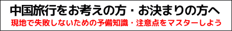

このサイトは中国旅行を楽しく円滑に過ごしてもらうため、事前に様々なことを知ってもらうことで、中国旅行の準備と注意点についてご案内いたします。
最近では中国旅行も旅行社などによる格安ツアーなども充実し、よりリーズナブルで手軽に行けるようになりました、現地では日本語が話せる添乗員や専用車など、中国語を話せなくても不便なく中国を満喫することもできます。
でも中国ってどんな国だろう？治安は？水や食べ物は？それに一番気になる反日活動などは？と、心配ごとも尽きないと思います。
行き先でトラブルのないように、事前準備と基本知識を身につけて楽しい中国旅行にしてください。
中国の基本情報
まずは中国の基本情報を見て、ざっくりと中国を把握しましょう。
中国各地の気候と服装準備
中国は広いです、事前に旅行場所の気候を調べましょう。
中国旅行の準備品
中国旅行での必需品やその他おすすめ準備品をご紹介。
中国のお金
中国のお金「元」について詳しくご案内。
両替とチップについて
中国で賢く両替するコツや、中国のチップ事情をご紹介。
中国のおすすめお土産
何かと迷う中国のお土産をご紹介。
中国の接客サービス事情
中国接客サービスは日本を基準にするととんでもない。
中国の交通事情
青信号でも赤信号を渡るつもりでの注意が必要です。


中国での物乞いや乞食対策
コアな観光地へ行くとかなりの確率で遭遇します。

中国の飲食店の利用方法
お店によって支払方法やルールは様々です。
中国のトイレ事情
中国のトイレ事情をご紹介
ここが違うよ中国文化
戸惑う中国の国民性と文化の違いについてご紹介。